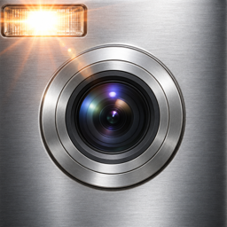

RetroCamHelp & Support
Quick answers. If yours isn't here, email muxtordevcom@gmail.com — a real person replies.
Purchases
I bought Pro but the cameras are locked
Open Settings in RetroCam and tap Restore Purchases. Make sure you're signed in with the Apple Account you bought with.
Is Pro a subscription?
No. It's a single purchase, and every future camera is included.
Refunds
Apple handles refunds at reportaproblem.apple.com.
Taking photos
How does the flash work?
With the flash on (or on Auto in the dark), your iPhone's real flash fires and RetroCam shapes the light like an early-2000s xenon flash: bright faces, the room falling to black. In daylight it acts as a gentle fill. You can turn off the real flash in Settings and keep the look simulated.
Can I change the date stamp?
Yes. Tap the gear on the camera screen: turn the stamp on or off, pick the date it shows (the day you shot it, any date, or today with a 2000s year), the format and the corner.
How do I use the Photo Booth?
Swipe to Booth under the shutter. It takes four shots, three seconds apart, then prints them as a strip or a sheet in colour or black and white.
Camera from the Lock Screen
Add the RetroCam control to your Lock Screen, Control Center or Action button. Photos taken while locked appear in your library the next time you open the app.
Your photos
Where are my photos saved?
In RetroCam's library, and — with Save to Photos on (the default) — in your Photos library too.
What is Develop Mode?
Like a real disposable: photos appear an hour later, or the next morning. Turn it on in Settings.
Can I change the camera after taking a photo?
Yes. Open the photo and tap Re-develop. This needs Keep Originals on in Settings (the default).
Contact
Email muxtordevcom@gmail.com or open an issue. Include your iPhone model and iOS version if something isn't working.